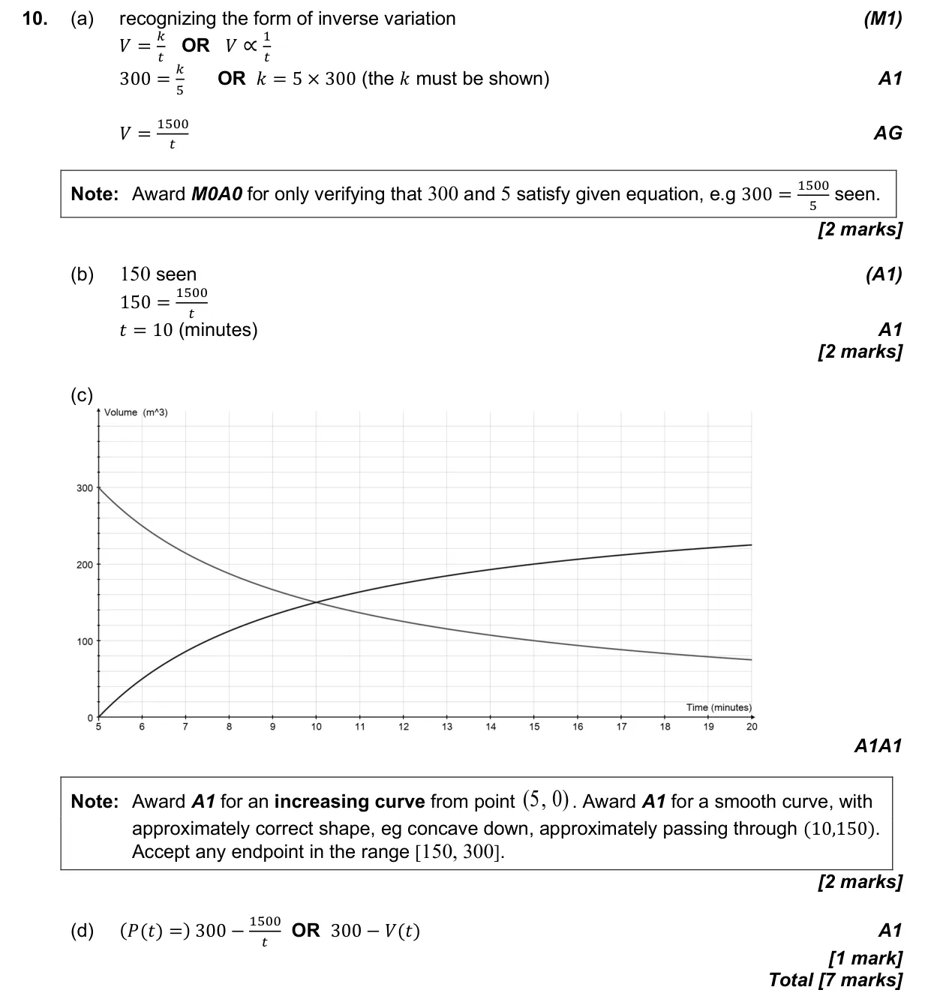

7 marks P1 TZ1 Calculator Appears in AI SL P1 Q10AI HL P1 Q6 2.5 Modelling with linear, quadratic, exponential, power, cubic and sinusoidal functions2.3 Graphs of functions2.6 The modelling process: choose, fit, test and use a model2.2 Functions, notation, domain, range and inverse as reflection Question Hide breakdown abcd Markscheme 